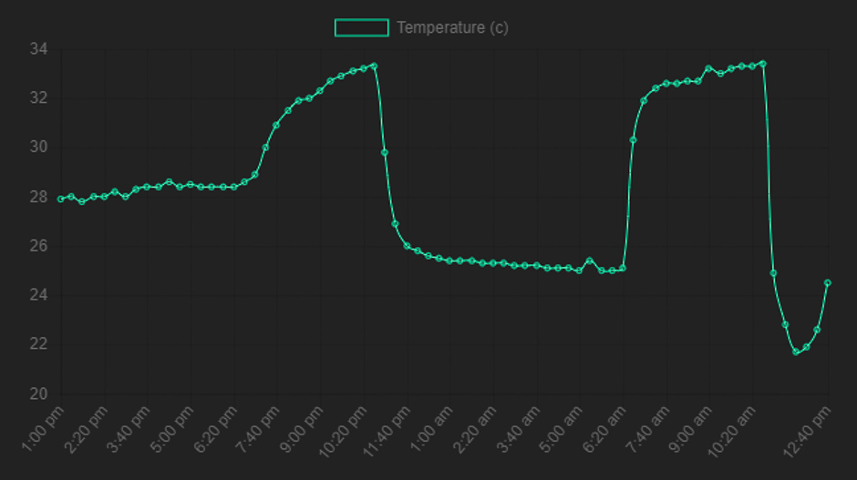

What it is
The MIT OpenAg Food Computer is a hyper local food growth chamber controlling light, humidity, temperature and many other factors which contribute to optimal plant success.
Spun off from this Food Computer project is a smaller, more affordable project called the MVP (minimal viable product). Where the Food Computer costs around $1500 dollars to create, the MVP costs around $300. Designed for education the MVP allows someone new to the field to engage in controlled environment agriculture for a relatively low price.
What I Did
I did two things: I built the MVP according to these designs, and I extended the project by creating a dashboard to view the vitals of my box on my own website.
By building the box I dove into the internet of things, figuring out how to send temperature and humidty data between the computer on the MVP and my own web server. I learned about soldering and wire stripping (things they don't teach you in a computer science degree). And about what factors contribute to proper hydroponic growth, such as ideal air temperature, water nutrients, and amount of light. Different ways to grow hydroponically such as the Food Computer's Areoponics, Cornel's ebb and flow system, or the MVP's basic bin full of water with plants sitting in it.
Building a dashboard and sending information around the internet leveraged my web development knowledge and hopefully will be able to answer some questions the OpenAg community has on storing the MVP's data in the cloud. Also, figuring out how to send images from the Raspberry Pi to my web server inspired me to write an article.
Features
Temperature and Humidity sensor: Adafruit SI7021.
Lamps.
Exhaust fan.
Circulation fan.
Bins.
Inspiration
The dream is solar powered, automatic farms that run themselves and cost no electricity. These kind of projects are already under way by teams like Mars Farm, OpenAg, and Cornel CEA. The robotic, fully automatic vision has yet to be answered while the fully solar powered farm has been deemed unadvisable by Cornel CEA.
This ted talk by Caleb Harper, the director of MIT OpenAg, explains the vision behind Food Computers. A network of plants boxes learning how to grow the perfect crop. I was inspired by this idea and decided to build and cotribute to the project.
Problems I Faced
I have found the temperature in the MVP often reaches crazy levels throughout the day. Usually sitting around 95 degrees. Far from the optimal 77 degrees stated in the documentation. The MVP relies on two computer fans to cool the grow chamber. One for circulation hanging from the top of the box, and another for evacuation attatched to the side. Although I do question the ability of two computer fans to cool the chamber, my circulation fan broke about halfway through the experiment which probably has something to do with the temperature reaching such levels. I taped the edges of the box closed which will hopefully create a more air tight seal, encouraging a greater amount of air to exit via the evacuation fan. I have yet to see if this solves the problem.
The light on the top of my MVP was actually slightly tilted. I didn't think much of this, the inside of the box is so reflective I assumed such a minor problem wouldn't make a difference. As time went on though the plants in the direction the light was tilted actually grew more than the plants on the other side. The successful plants were closer to the door opening, maybe getting fresher air than the ones in the back, but nonetheless I thought it was interesting that such a minor adjustment of the light position could have such a potentially large impact on plant growth.
Ideas For The Future
Precision agriculture has already proven itself as incredibly important, estimated as a $240 billion dollar industry. But how far will it go? Will entirely controlled growing environments be the future of food? What role will tech have in humanities oldest front?
One day I'd like to grow more interesting plants in my setup, such as herbs and maybe tea plants. Growing food locally, in regions it doesn't naturally grow, is a huge potential for this tech. Certain regions of the world such as China and Costa Rica produce some of the most sought after tea and coffee in the world. What factors contribute to their success? And can those factors be replicated in a controlled environment anywhere in the world?